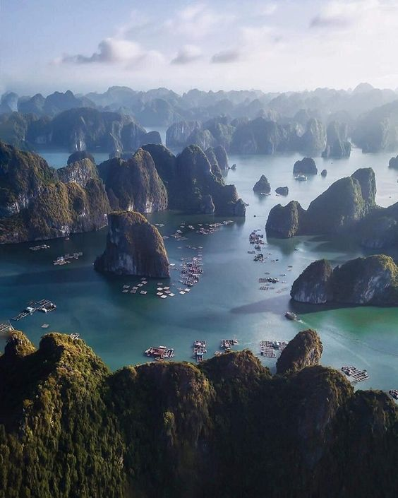
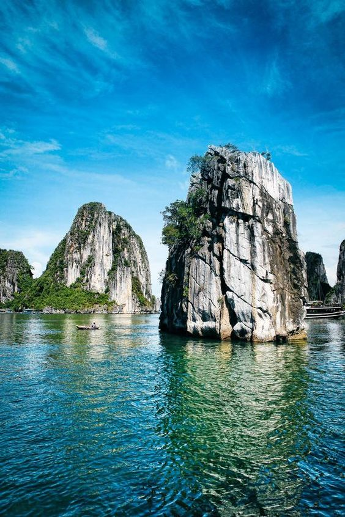
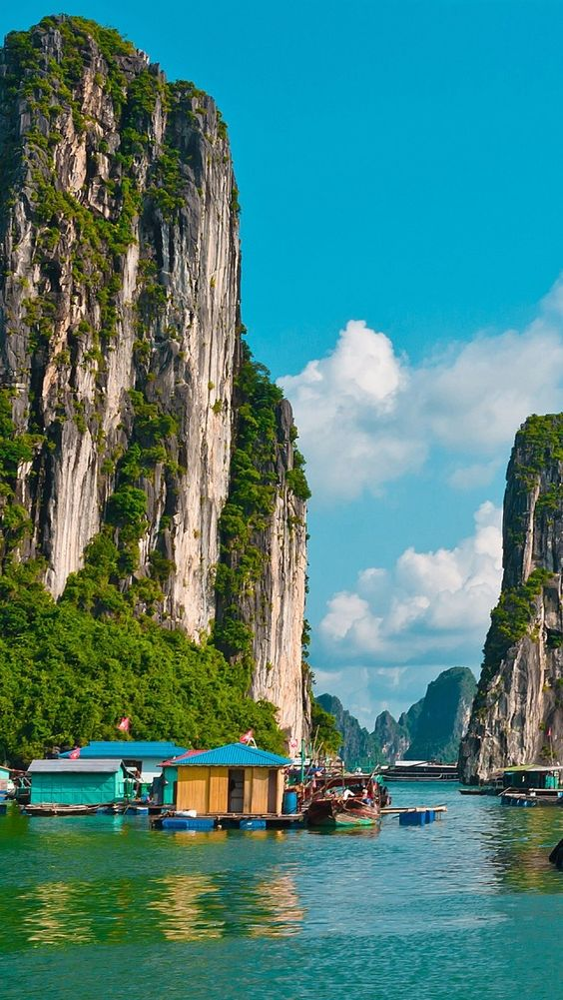

The islands in HaLong Bay are mainly limestone and schist islands most lying in the two main areas: the southeastern part of Bai Tu Long Bay and southwestern part of HaLong Bay. These islands represent the most ancient images of a geographical site having a tectonic age of from 250 million to 280 million years. They are the result of many times of rising and lowering processes of the continent to form a karst. The process of nearly full erosion and weathering of the karst created the unique Ha Long Bay in the world. In a not very large area, thousands of islands with different forms look like glittering emeralds attached to the blue scarf of a virgin. The area where many stone islands concentrate has spectacular scenes and world-famous caves and is the center of Ha Long Bay Natural Heritage, including HaLong Bay and a part of Bái Tu Long Bay. The islands in HaLong Bay are mainly limestone and schist islands most lying in the two main areas: the southeastern part of Bai Tu Long Bay and southwestern part of HaLong Bay. These islands represent the most ancient images of a geographical site having a tectonic age of from 250 million to 280 million years. They are the result of many times of rising and lowering processes of the continent to form a karst. The process of nearly full erosion and weathering of the karst created the unique Ha Long Bay in the world. In a not very large area, thousands of islands with different forms look like glittering emeralds attached to the blue scarf of a virgin. The area where many stone islands concentrate has spectacular scenes and world-famous caves and is the center of Ha Long Bay Natural Heritage, including HaLong Bay and a part of Bai Tu Long Bay.



